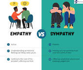

E
E
E
Dictionary
Definition from Oxford Languages. Learn more
empathy
/ˈɛmpəθi/
noun
the ability to understand and share the feelings of another.
"he has a total lack of empathy for anybody"
Similar ⁝
Affinity with
Rapport with
Sympathy with
Understanding of
people also ask ⁝
Placeholder content for this accordion, which is intended to demonstrate the
.accordion-flush class. This is the first item's accordion body.Placeholder content for this accordion, which is intended to demonstrate the
.accordion-flush class. This is the second item's accordion body. Let's imagine this being filled with some actual content.Placeholder content for this accordion, which is intended to demonstrate the
.accordion-flush class. This is the third item's accordion body. Nothing more exciting happening here in terms of content, but just filling up the space to make it look, at least at first glance, a bit more representative of how this would look in a real-world application.Placeholder content for this accordion, which is intended to demonstrate the
.accordion-flush class. This is the third item's accordion body. Nothing more exciting happening here in terms of content, but just filling up the space to make it look, at least at first glance, a bit more representative of how this would look in a real-world application.Empathy ⋮

Empathy is generally described as the ability to take on another's perspective, to understand, feel, and possibly share and respond to their experience. There are more definitions of empathy that include but are not limited to social, cognitive, and emotional processes primarily concerned with understanding others. Wikipidia